WINDOWS IN REAL SPACES
창으로 달라지는 공간
LX Z:IN 공식 시공 사례에서 다음 현장의 창호를 살펴보세요.
마음에 드는 공간을 고르면, 대산이 현장에 맞는 창호 상담을 안내합니다.
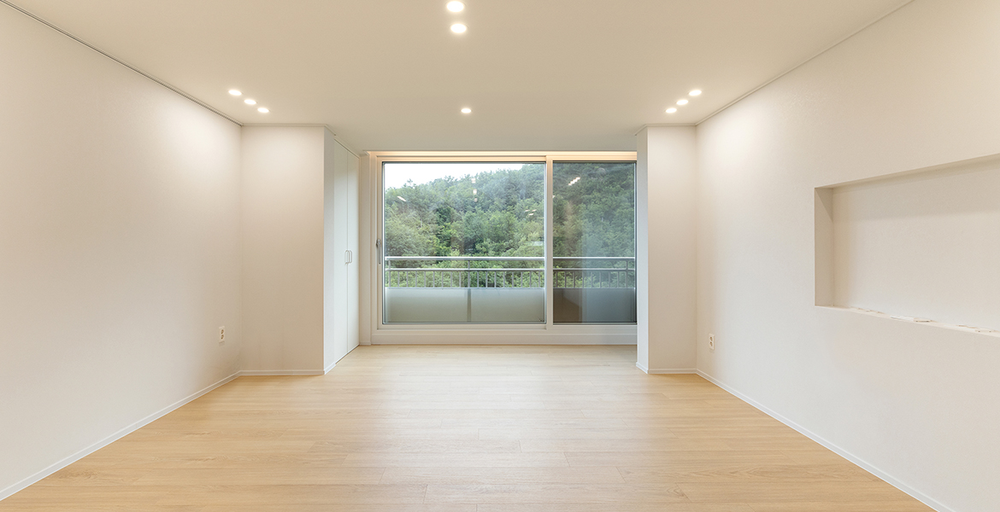
LX Z:IN 공식 사례공원 풍경을 담은 거실
개방감 · 확장 거실
사진과 사례 보기 ↗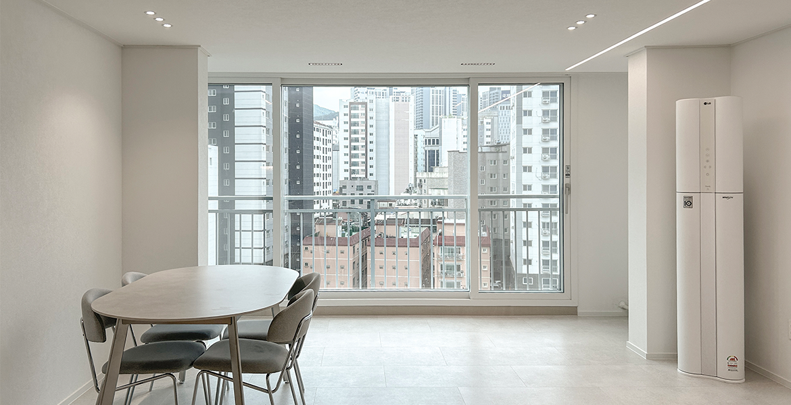
LX Z:IN 공식 사례소음 고민에서 시작한 창호 교체
소음 고려 · 거실 창
사진과 사례 보기 ↗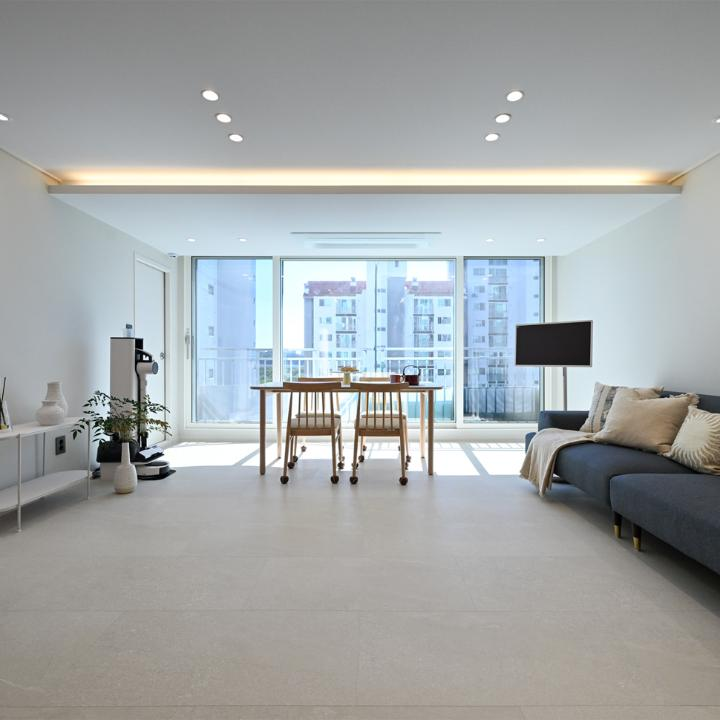
LX Z:IN 공식 사례햇살이 머무는 확장부
베젤리스 · 확장 거실
사진과 사례 보기 ↗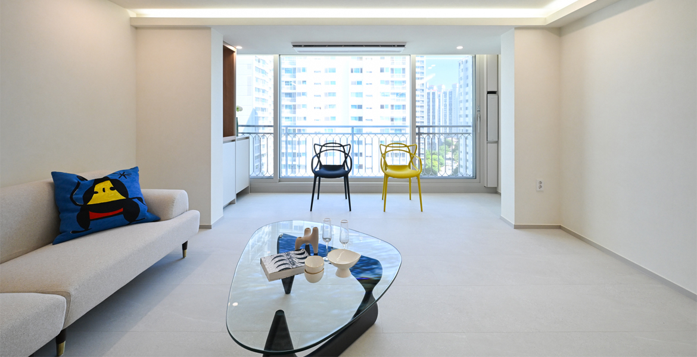
LX Z:IN 공식 사례창가에 더한 작은 휴식 공간
창가 활용 · 확장 거실
사진과 사례 보기 ↗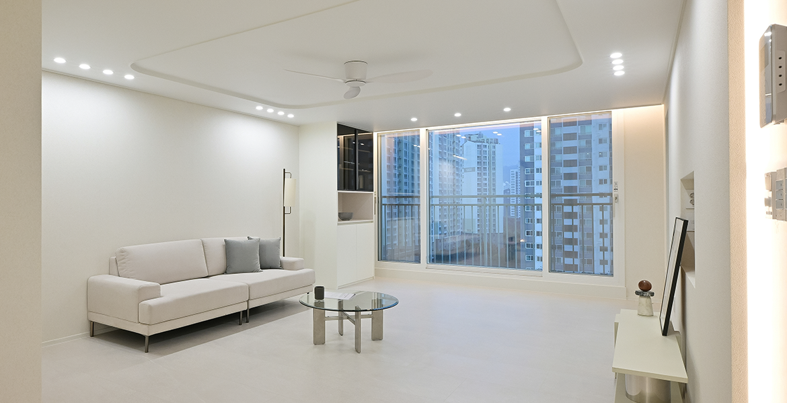
LX Z:IN 공식 사례간결한 창으로 정돈한 거실
개방감 · 확장 거실
사진과 사례 보기 ↗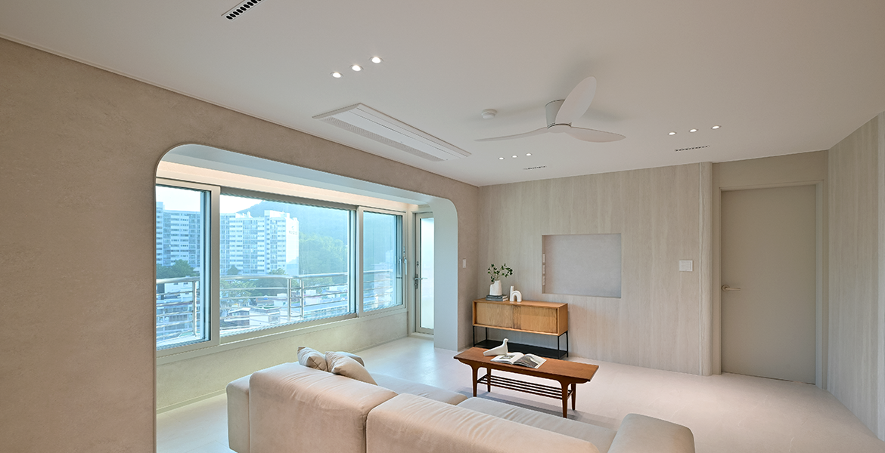
LX Z:IN 공식 사례넓은 공간을 잇는 창
큰 창 · 개방감
사진과 사례 보기 ↗사진·사례 출처: LX Z:IN / LX하우시스. 각 사례에 원 시공업체와 원문을 표시했습니다.
공간을 자세히 살펴보세요
현장별 사진과 창호 선택 시 살펴볼 내용을 모았습니다.
서대문 독립문극동 · 32평공원 풍경을 담은 거실
LX Z:IN 공식 시공 사례 · 원 시공업체: 행복한집짓기
발코니를 확장한 거실에 뷰프레임을 적용한 LX 공식 사례입니다. 창밖 녹지와 밝은 실내가 자연스럽게 이어지는 모습을 살펴보세요.
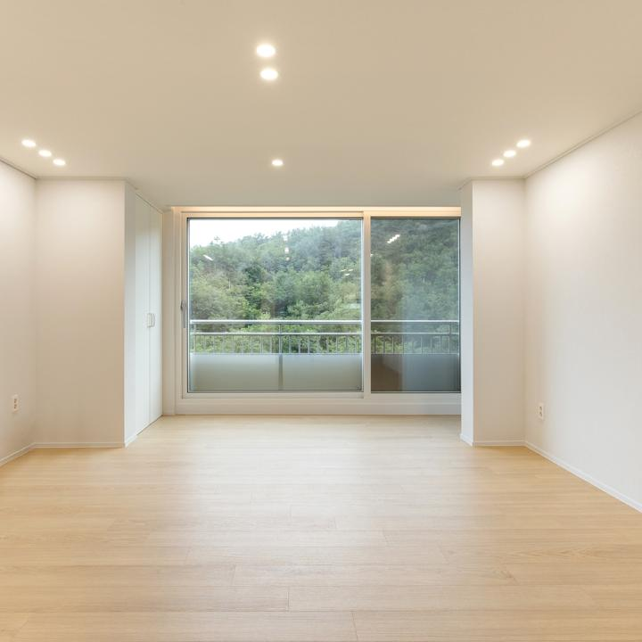
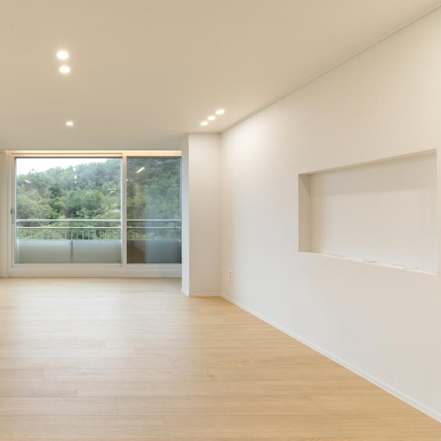
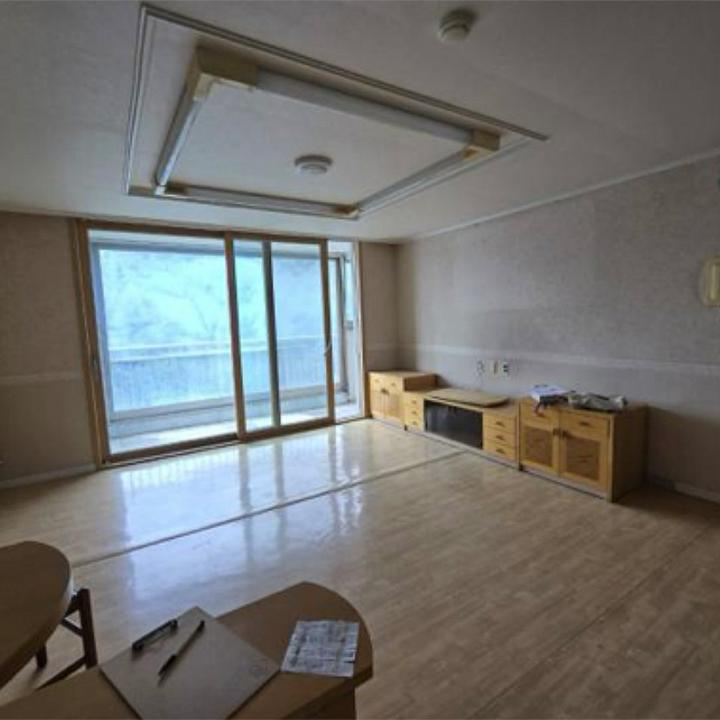
이런 공간을 계획하고 있다면
확장부 창의 크기와 개폐 방식, 외부와 맞닿는 부분의 단열 계획을 함께 검토합니다.
사진은 LX 공식 사례이며 대산의 시공 현장 사진이 아닙니다. 원문에서 확인된 제품군은 뷰프레임이며, 세부 모델·색상·옵션은 상담 시 확인합니다.
안양 한승미메이드 · 34평소음 고민에서 시작한 창호 교체
LX Z:IN 공식 시공 사례 · 원 시공업체: 누아디자인
외부 기찻길 소음을 고려해 뷰프레임으로 교체한 LX 공식 사례입니다. 거실 창의 구성과 창가 마감을 중심으로 소개합니다.
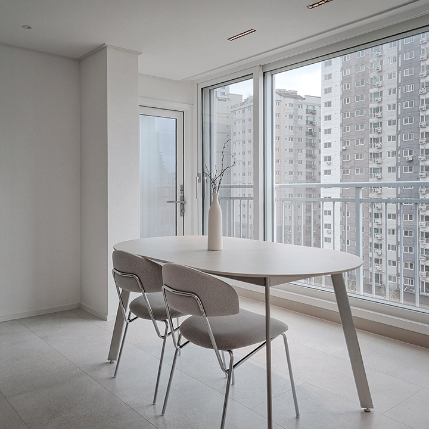
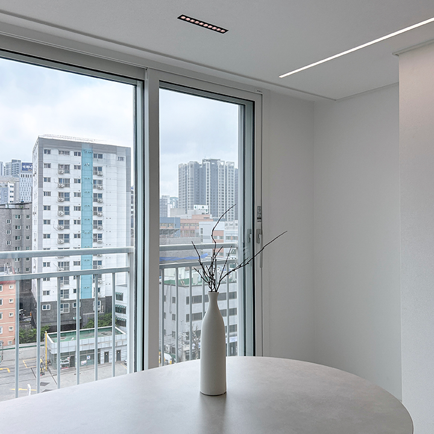
이런 공간을 계획하고 있다면
창이 향하는 방향과 주변 소음, 기존 창의 상태를 확인한 뒤 유리와 창호 구성을 검토합니다.
사진은 LX 공식 사례이며 대산의 시공 현장 사진이 아닙니다. 원문에서 확인된 제품군은 뷰프레임이며, 세부 모델·색상·옵션은 상담 시 확인합니다.
구리 토평동 e편한세상 · 33평햇살이 머무는 확장부
LX Z:IN 공식 시공 사례 · 원 시공업체: 주식회사 조우
거실 확장부에 베젤리스 디자인의 뷰프레임을 적용한 LX 공식 사례입니다. 창가의 식탁과 넓은 유리면이 만드는 공간감을 볼 수 있습니다.
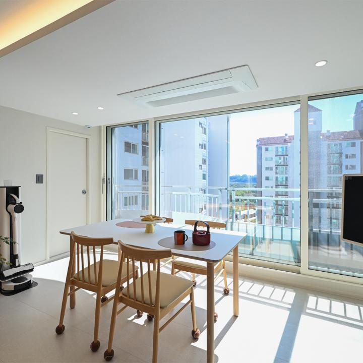
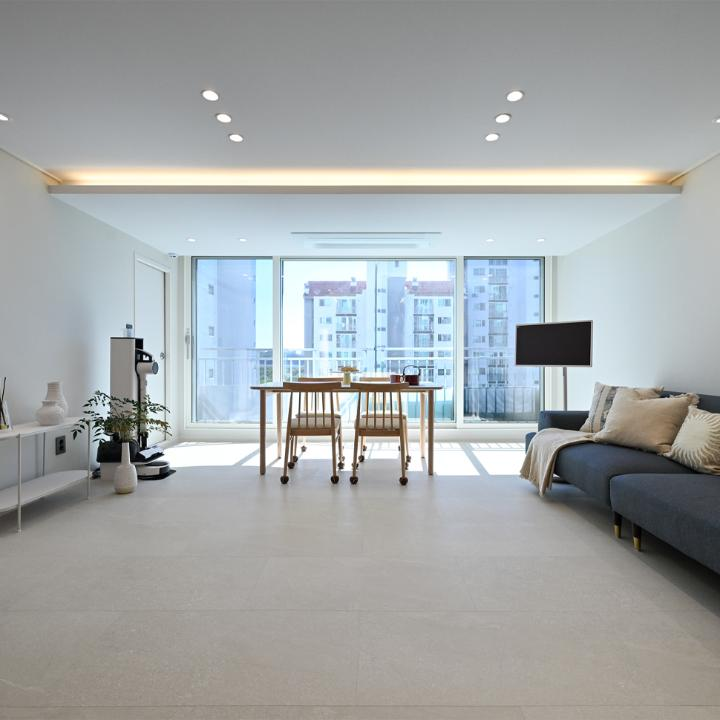
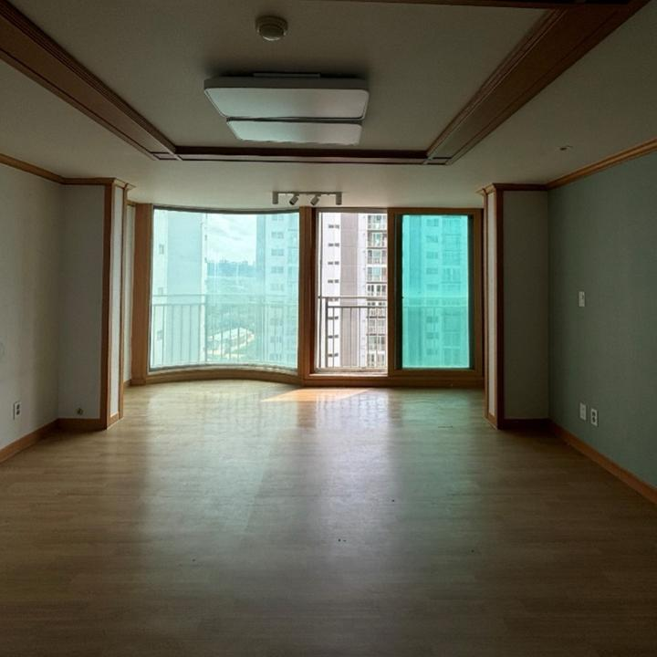
이런 공간을 계획하고 있다면
베젤리스 디자인의 적용 모델과 창 크기, 유리 사양을 현장 조건에 맞춰 확인합니다.
사진은 LX 공식 사례이며 대산의 시공 현장 사진이 아닙니다. 원문에서 확인된 제품군은 뷰프레임이며, 세부 모델·색상·옵션은 상담 시 확인합니다.
해운대 좌동 삼성아파트 · 32평창가에 더한 작은 휴식 공간
LX Z:IN 공식 시공 사례 · 원 시공업체: 재경디자인
확장한 거실에 뷰프레임을 적용하고 창가 쪽에 홈 바를 구성한 LX 공식 사례입니다. 창 주변의 사용 동선과 채광을 살펴보세요.
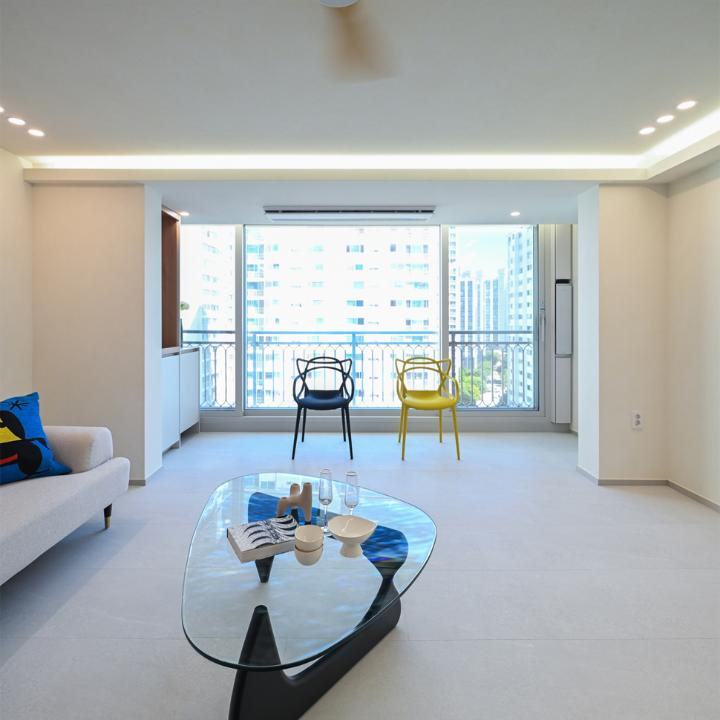
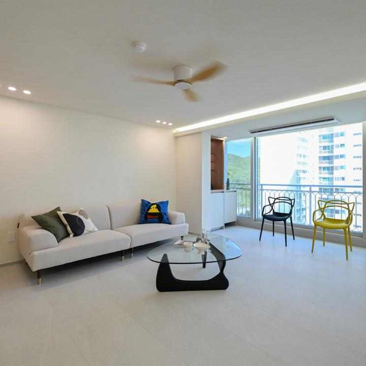
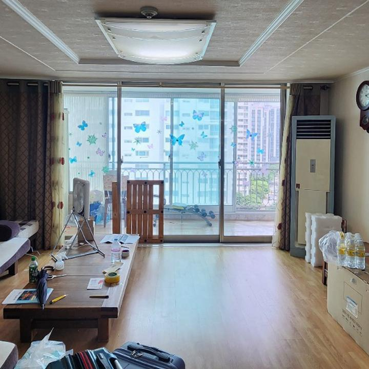
이런 공간을 계획하고 있다면
창 앞 가구 배치와 손잡이 위치, 환기 동선을 함께 확인합니다. 원문에 소개된 자동환기는 별도 옵션으로 공급 가능 여부를 확인합니다.
사진은 LX 공식 사례이며 대산의 시공 현장 사진이 아닙니다. 원문에서 확인된 제품군은 뷰프레임이며, 세부 모델·색상·옵션은 상담 시 확인합니다.
동대문 장안현대홈타운3차 · 30평간결한 창으로 정돈한 거실
LX Z:IN 공식 시공 사례 · 원 시공업체: 돋움디자인
발코니 확장과 뷰프레임 시공을 함께 진행한 LX 공식 사례입니다. 밝은 거실과 슬림한 창의 조화를 전후 사진으로 비교할 수 있습니다.
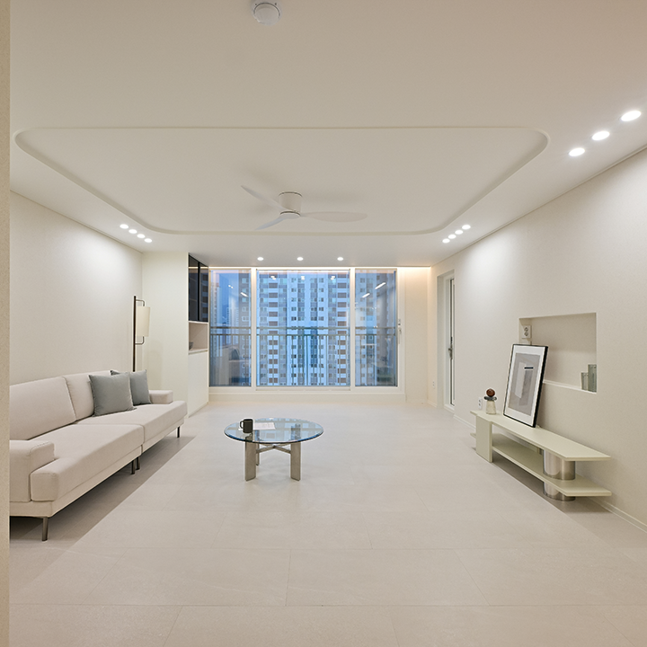
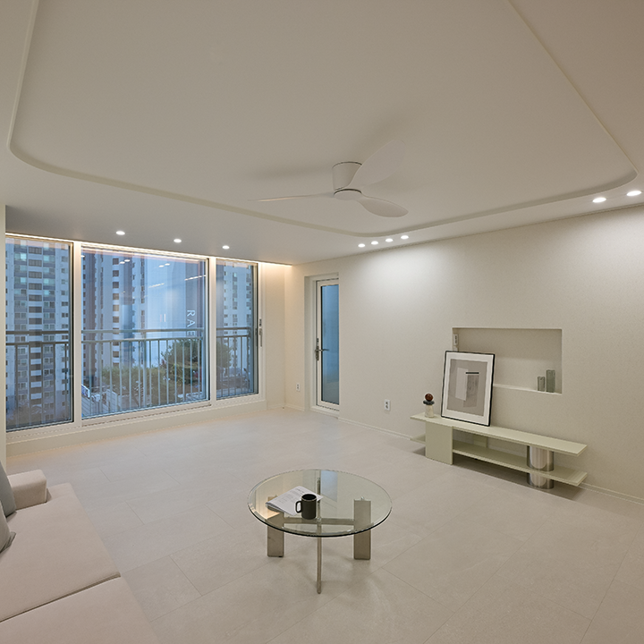
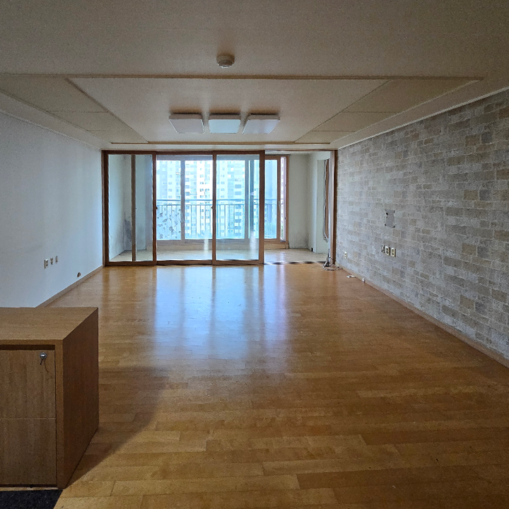
이런 공간을 계획하고 있다면
확장 여부와 실내 마감 계획에 맞춰 창의 구성과 연결부를 검토합니다.
사진은 LX 공식 사례이며 대산의 시공 현장 사진이 아닙니다. 원문에서 확인된 제품군은 뷰프레임이며, 세부 모델·색상·옵션은 상담 시 확인합니다.
부산 우동 동경위너스 · 65평넓은 공간을 잇는 창
LX Z:IN 공식 시공 사례 · 원 시공업체: 재경디자인
여러 방향의 창과 슬림한 창호 디자인이 돋보이는 LX 공식 사례입니다. 넓은 거실에서 창의 배치가 만드는 시야를 살펴보세요.
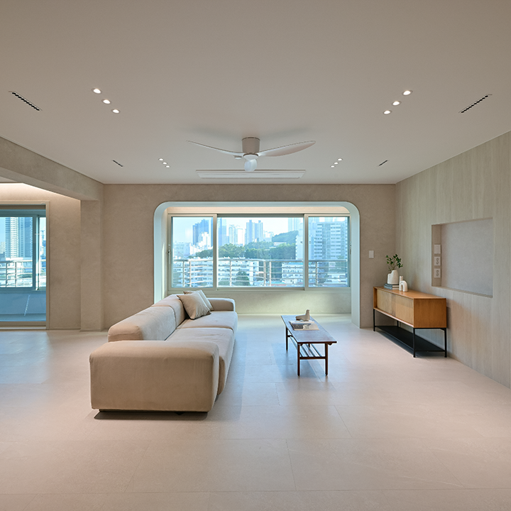
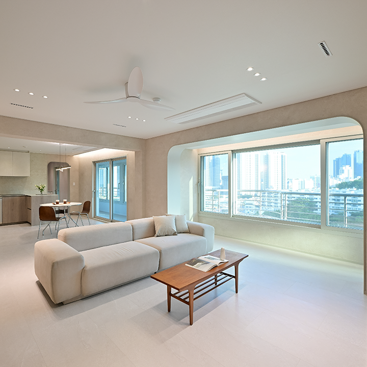
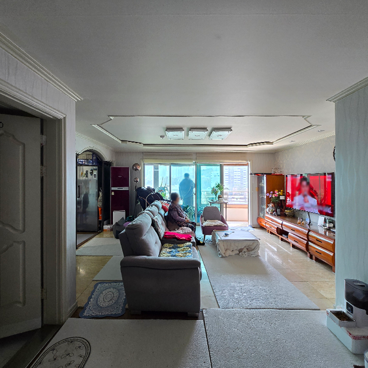
이런 공간을 계획하고 있다면
창이 여러 면에 있는 현장은 면별 크기와 방향, 여닫는 위치를 나누어 확인합니다.
사진은 LX 공식 사례이며 대산의 시공 현장 사진이 아닙니다. 원문에서 확인된 제품군은 뷰프레임이며, 세부 모델·색상·옵션은 상담 시 확인합니다.
OFFICIAL FILMS
영상으로 보는 뷰프레임
LX Z:IN 공식 채널의 제품 소개와 실제 공간 영상입니다.
뷰프레임 창호로 단열과 개방감까지｜수원 주공뉴타운 33평
YouTube에서 보기 ↗DAESAN PROJECTS
대산이 함께한 현장
대산의 납품·시공 이력 중 일부 현장입니다.
- 대산 현장 이력잠실 리센츠
- 대산 현장 이력잠실 엘스
- 대산 현장 이력광명 KBS우성
- 대산 현장 이력둔촌 푸르지오
- 대산 현장 이력상암 월드컵파크
다음 현장의 창호를 함께 준비하세요.
현장 위치와 교체할 공간을 알려주시면 전담 직원이 안내합니다.